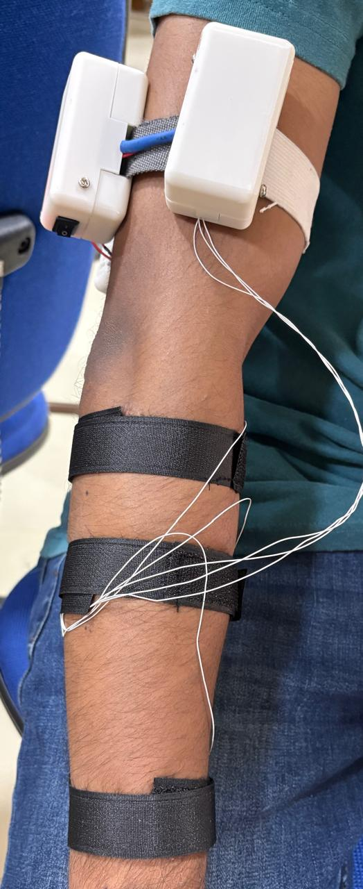
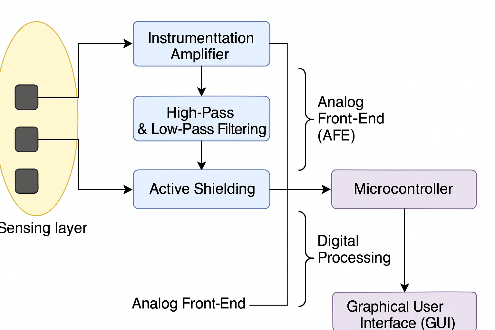
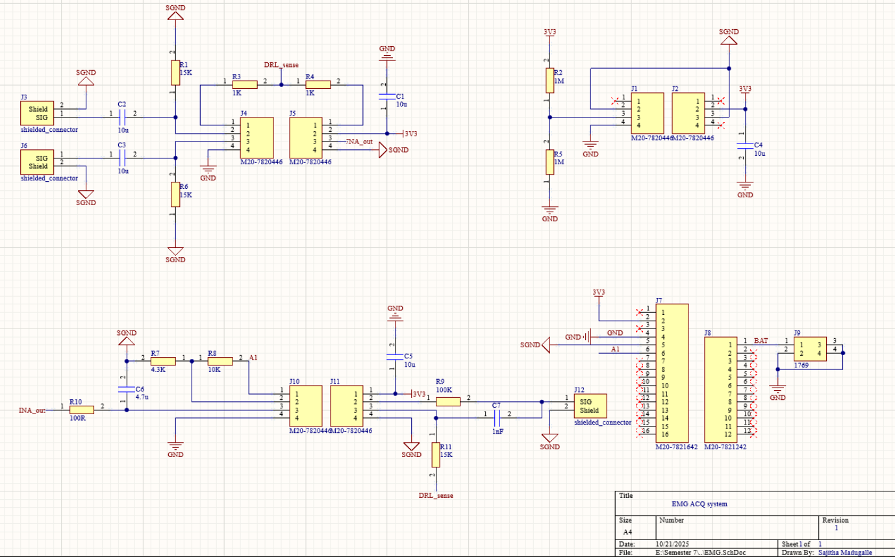
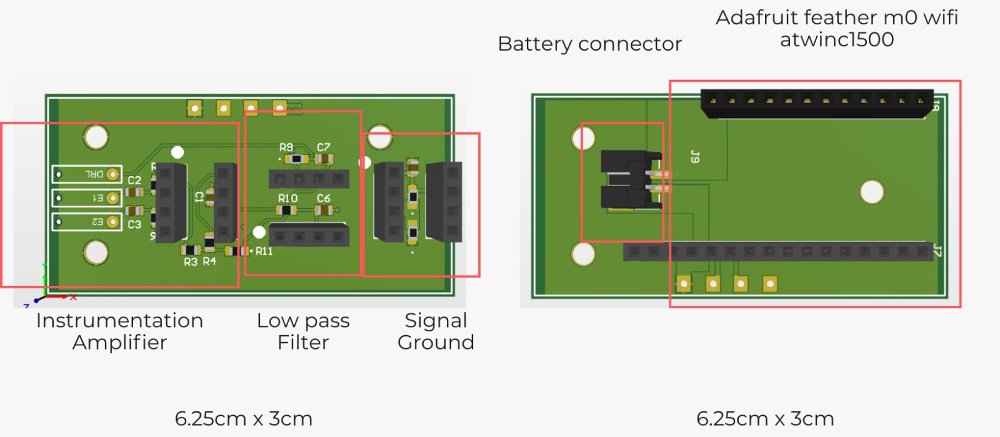
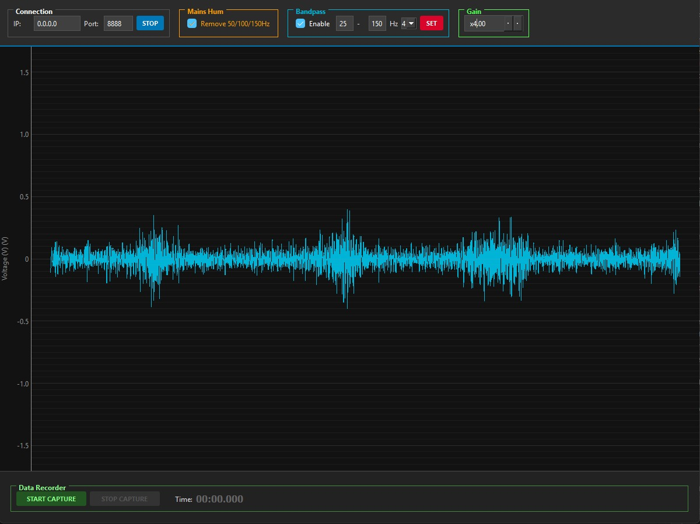
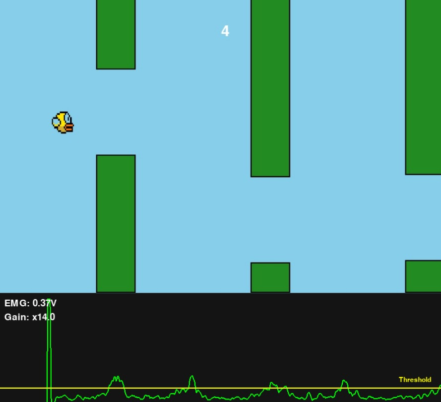
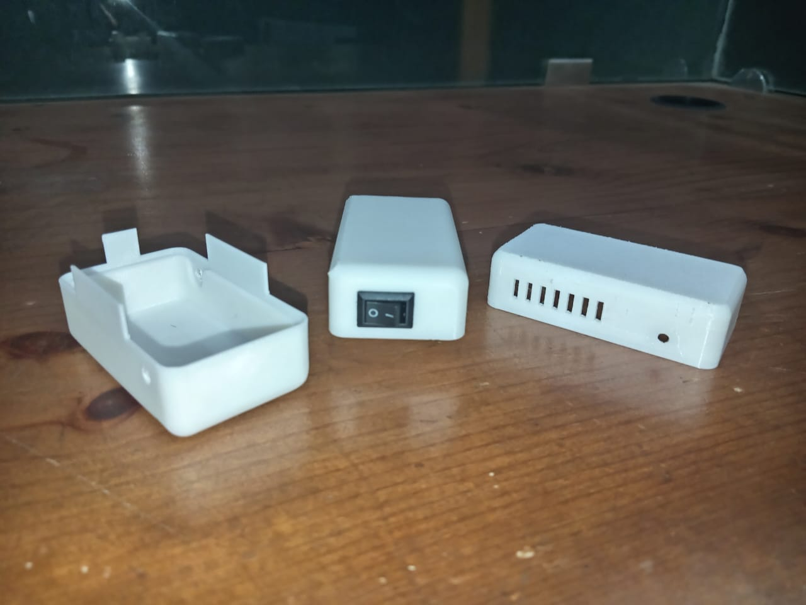

Dry-contact electrodes
Ag/AgCl-based dry electrodes were held against the forearm with adjustable bands. Contact pressure and cable movement were considered as part of the signal-quality challenge.
 LOHAN ATAPATTU
LOHAN ATAPATTUBiomedical electronics · Biosignal processing · 2025
A dry-electrode wearable system that captures forearm muscle activity and uses its changing amplitude to control a simple game in real time.

PROJECT OVERVIEW
This project developed a wearable surface electromyography (sEMG) acquisition system using three dry-contact electrodes. The analog front end amplifies and filters the small signals produced by muscle activity, while active shielding helps limit interference picked up along the electrode leads.
A Feather M0 samples the conditioned signal and streams it to a desktop interface for live viewing and capture. To demonstrate a direct use of the signal, an amplitude threshold was mapped to a key press in a custom Flappy Bird-style game.
SIGNAL PATH
The design connects the electrode interface, low-noise conditioning, embedded sampling, and PC-based visualization in a single testable system.

An INA333 instrumentation amplifier provides high input impedance and common-mode rejection. A band-pass stage limits the signal to the target EMG band; the design report specifies an analog passband of 1–340 Hz.
The Feather M0 samples at 25 kHz. The custom desktop GUI supports live plotting, gain adjustment, selectable 50/100/150 Hz mains hum removal, configurable band-pass filtering, and local data capture.
CIRCUIT & PROTOTYPE
The project combined a custom analog circuit and PCB with dry electrodes, a wearable enclosure, embedded acquisition, and interactive software.
Ag/AgCl-based dry electrodes were held against the forearm with adjustable bands. Contact pressure and cable movement were considered as part of the signal-quality challenge.
Dry electrodes showed higher baseline noise than wet electrodes, but voluntary contraction patterns remained visible. Active shielding was used to reduce capacitive pickup along the leads.
The live EMG amplitude was compared with a threshold; crossing it generated a game input. This demonstrated a basic muscle-activity interface rather than a trained gesture classifier.
PROJECT GALLERY




